時間序列的預言者：如何通過 RNN、LSTM 和 GRU 預測未來
Table of Contents
1. CNN的限制
在卷積神經網路中，我們提過CNN的想法源自於對人類大腦認知方式的模仿，當我們辨識一個圖像，會先注意到顏色鮮明的點、線、面，之後將它們構成一個個不同的形狀(眼睛、鼻子、嘴巴 …)，這種抽象化的過程就是 CNN 演算法建立模型的方式。其過程如圖11。
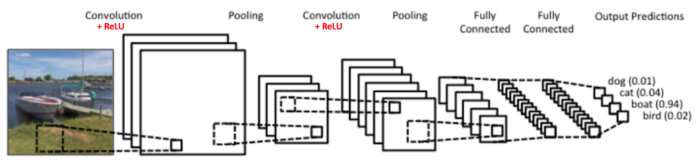
Figure 1: CNN 概念
至於圖片中的每一個特徵則是利用卷積核來取得(如圖2)，換言之，CNN其實是在模擬人類的眼睛。
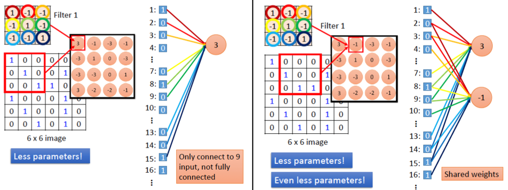
Figure 2: CNN原理
萬一我們所要處理的資料並不是一張張的圖、而是一系列連續性、有時間順序的資料呢？例如：
- 一篇文章: 也許我們想生成這篇文章的摘要
- 一段時間內蒐集一的某地PM 2.5數值: 也許我們想預測該地下週的PM 2.5
- 一段演講錄音: 也許我們想生成逐字稿
你會發現，這類資料其實不太適合用眼睛，可能更適合用耳朵，所以拿CNN來分析這類資料大概是用錯了工具(相信經過理財達人競賽的你應該深有同感)。
那麼，哪一種模型比較適合模擬出人類的耳朵功能？這是本節的討論重點。
2. 遞迴神經網路(Recurrent Neural Network, RNN)
遞迴神經網絡（RNN）是一種專門設計來處理序列資料的人工神經網絡。序列資料指的是那些隨時間連續出現的資料，比如語言（單詞組成的句子）、影片（一連串的影像畫面），或者是音樂（一連串的音符）。
想像你利用每天晚上睡前花30分鐘追劇，每當新的一集開始時，你通常還會記得上一集發生了什麼。RNN也是這樣工作的：它在處理資料（例如一句話中的每個單詞）時，會記得之前的資訊，並利用這些資訊來幫助理解或預測下一步會發生什麼。
那RNN是如何做到這點的呢?這種“記憶”是通過網絡中的循環連接實現的。這些連接使得訊息可以在模型的一層之間前後流動，就像你在看連續劇時保持對劇情的記憶一樣。我們先來看圖3，左邊(a,b)是我們熟悉的CNN神經網路，資料一律由模型的左側layer往右側傳送；而右邊的RNN(圖3c, 圖3d)則有點不同，每一層的神經元在將資料往右傳遞的同時，還偷偷留了一份給 自己 (參考圖中的紅色虛線) ，這裡說的自己不是真正的自己，而是 下一個回合的自己 。
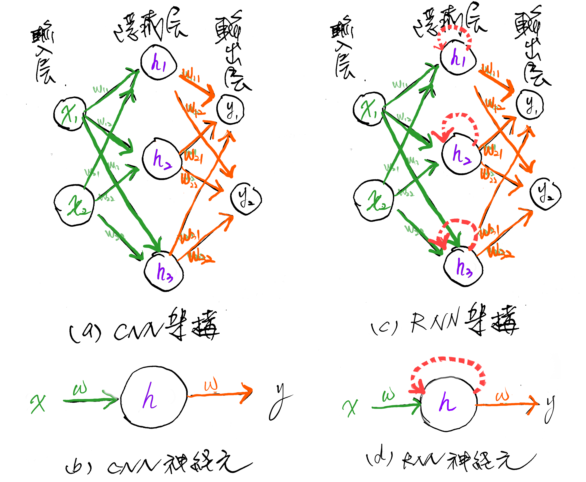
Figure 3: CNN v.s. RNN
聽起來好像有點抽象，沒關係，我們現在把圖3中右側RNN的某一個神經元單獨抽出來分解它的內部動作(結果如圖4)。
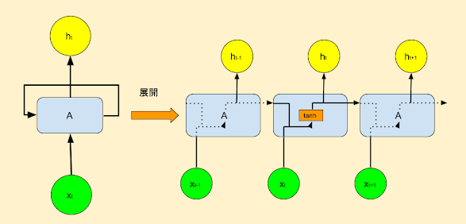
Figure 4: RNN典型結構
要看懂圖4，你只要搞清楚三件事:
- RNN不像CNN那樣每次讀入一整張圖，而是分批讀入序列資料，例如，第1次(也就是第1個時間點(\(t_0\))讀入\(x_0\)、第2次(也就是第2個時間點(\(t_1\))讀入\(x_1\)…
- 圖中右側「展開後」的三神經元其實是同一個，分別代表不同時間點的神經元，我們可以由 \(h_{t-1}, h_{t}, h_{t+1}\) 和 \(x_{t-1}, x_{t}, x_{t+1}\) 觀察出同樣的意思。
- 原本常見的資料在模型中傳遞方向是由左而右，在圖4中則是由下而上，也就是輸入資料是底下的\(x_t\)、輸出為上面的\(h_t\)。
圖4右側代表的意思是：
- 在第1個時間點(\(t-1\))取得輸入(\(x_{t-1}\))後，神經元會針對 \(x_{t-1}\) 進行運算，更新自己的「狀態」(這個就是會影響「下一個自己」的關鍵)然後輸出結果\(h_{t-1}\)
- 在第2個時間點(\(t\))取得輸入(\(x_{t}\))後，利用剛才(時間點{\(t-1\))更新的「狀態」來運算\(x_t\)(這就是神經元受到上一個自己影響的來源，也被稱為「記憶」)，然後再次更新自己的狀態並輸出結果\(h_t\)
- 最後，在第3個時間點(\(t+1\))取得輸入(\(x_{t+1}\))後，利用剛才(時間點{\(t\))更新的「狀態」來運算\(x_{t+1}\)，然後再次更新自己的狀態並輸出結果\(h_{t+1}\)
整個資料讀取、處理、傳遞的流程大致如下圖所示：
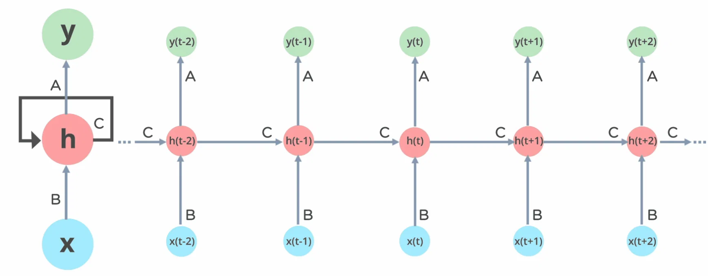
Figure 5: RNN的運作流程
用個具體一點的例子，假設我們假設剛剛的序列 X 實際上是一個內容如下的英文問句：
1: X = [ What, time, is, it, ? ]
而且 RNN 已經處理完前兩個元素 What 和 time 了。
則接下來 RNN 會這樣處理剩下的句子：

Figure 6: RNN如何處理自然語言
如同我們由左到右逐字閱讀這段文字同時不斷地更新你腦中的記憶狀態，RNN也是以相同的原理在做這件事。RNN的這種設計使它特別適合於像語言翻譯、語音識別或任何需要考慮過去資訊以更好地理解當前情境的任務。例如，在翻譯句子時，理解前面的詞可以幫助更準確地翻譯後面的詞。
上面提及RNN的「記憶」能力是由神經元的「狀態」實作出來，這種狀態以一個隱藏向量(hidden vector)的形式存在於神經元中，如圖7中的\(h_{t}\))。
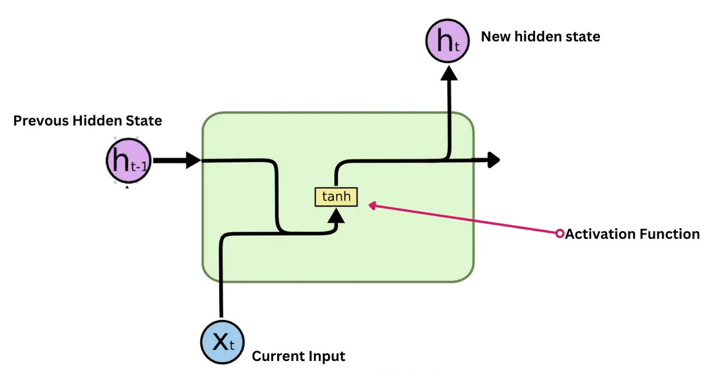
Figure 7: RNN神經元
這個神經元在時間點t的輸出 \(h_t\) 由以下公式計算:
\[ h_t = f(W_x \cdot X_t + W_h \cdot h_{t-1} + b) \]
其中，
- \(x_t\): 這是在每個時間點(\(t\))輸入給神經元給 RNN 的資料，例如句子中的單字、圖像中的像素或時間序列中的資料點。
- \(h_{t-1}\): 先前的隱藏狀態(\(h_{t-1}\))，可以把它看成前一個時間點(\(t-1\))的網路記憶，就是它封裝了重要的歷史訊息，以舊有的記憶協助 RNN 理解當前的資料。
- 權重矩陣(\(W_t, W_h\) ): 這些矩陣是模型訓練的目的，可以將其視為模型的「知識」。它們決定了應該對當前輸入(\(x_t\)) 和過去記憶(\(h_{t-1}\) ) 的重視程度。
- 偏移值(\(b\)): 偏差項可作為模型的微調器，確保激活函數與資料的固有特徵協調運作。
- 激活函數(\(f\)): RNN常用的激活函數有tanh 或 ReLU，讓RNN具備非線性的特徵，以捕捉線性模型可能忽略的複雜資料模式。
但是，RNN也有一些限制，比如它們很難處理很長的序列，因為過長時間的記憶會逐漸消失。這就像如果你試圖回憶幾個月前看的某集連續劇的細節，可能會比較困難。這個問題在後來被一種叫做LSTM的更進階版本的RNN解決。
總之，RNN是一種強大的工具，專門用於處理和預測序列資料中的模式，就像我們用記憶來理解和預測日常生活中的事件一樣。
3. RNN實作
3.1. RNN的程式運作示例
RNN的運作概念非常簡單，就是在每個時間點 t，RNN 會讀入一個新的序列資料 input_t，並利用這個資料以及自己的記憶狀態 state_t 來產生一個輸出 output_t。這個過程可以用下面的程式碼來表示：
1: def f(input_t, state_t): # f 函式是神經元的運算 2: return input_t + state_t 3: state_t = 0 # 初始化細胞的狀態 4: for input_t in input_sequence: 5: output_t = f(input_t, state_t) # f 函式是神經元的運算 6: state_t = output_t # 更新細胞的狀態
在 RNN 每次讀入任何新的序列資料前，細胞 A 中的記憶狀態 state_t 都會被初始化為 0。
接著在每個時間點 t，RNN 會重複以下步驟：
- 讀入 input_sequence 序列中的一個新元素 input_t
- 利用 f 函式將當前細胞的狀態 state_t 以及輸入 input_t 做些處理產生 output_t
- 輸出 output_t 並同時更新自己的狀態 state_t
面對一個如下的簡易RNN，要如何將神經元當下的記憶 state_t 與輸入 input_t 結合，才能產生最有意義的輸出 output_t 呢？
1: state_t = 0 2: # 細胞 A 會重複執行以下處理 3: for input_t in input_sequence: 4: output_t = f(input_t, state_t) 5: state_t = output_t
RNN神經元在時間點t的輸出 \(h_t\) 由以下公式計算:
\[ h_t = f(W_x \cdot X_t + W_h \cdot h_{t-1} + b) \]
在 SimpleRNN 的神經元中，這個函數 \(f\) 的實作很簡單，這也導致了其記憶狀態 state_t 沒辦法很好地「記住」前面處理過的序列元素，因而造成 RNN 在處理後來的元素時，就已經把前面重要的資訊給忘記了，也就是只有短期記憶，沒有長期記憶。長短期記憶（Long Short-Term Memory, 後簡稱 LSTM）就是被設計來解決 RNN 的這個問題。
3.2. RNN的程式模型架構
RNN的模型架構非常簡單，只需要一個 RNN 層即可。以 Keras 為例，建立一個 RNN 層只需要建立一個 SimpleRNN 層即可。以下是一個簡單的 RNN 模型架構：
1: import tensorflow as tf 2: from tensorflow.keras import layers, models 3: 4: # 模型輸入層 (4個節點) 5: inputs = layers.Input(shape=(1, 4)) 6: 7: # 隱藏層 (RNN層, 2個節點，對應h1, h2) 8: hidden = layers.SimpleRNN(units=2, activation='tanh', return_sequences=False)(inputs) 9: 10: # 模型輸出層 (2個節點) 11: outputs = layers.Dense(units=2, activation='linear')(hidden) 12: 13: # 建立並編譯模型 14: model = models.Model(inputs=inputs, outputs=outputs) 15: model.compile(optimizer='adam', loss='mse') 16: 17: # 顯示模型結構 18: model.summary()
Model: "functional" ┏━━━━━━━━━━━━━━━━━━━━━━━━━━━━━━━━━┳━━━━━━━━━━━━━━━━━━━━━━━━┳━━━━━━━━━━━━━━━┓ ┃ Layer (type) ┃ Output Shape ┃ Param # ┃ ┡━━━━━━━━━━━━━━━━━━━━━━━━━━━━━━━━━╇━━━━━━━━━━━━━━━━━━━━━━━━╇━━━━━━━━━━━━━━━┩ │ input_layer (InputLayer) │ (None, 1, 4) │ 0 │ ├─────────────────────────────────┼────────────────────────┼───────────────┤ │ simple_rnn (SimpleRNN) │ (None, 2) │ 14 │ ├─────────────────────────────────┼────────────────────────┼───────────────┤ │ dense (Dense) │ (None, 2) │ 6 │ └─────────────────────────────────┴────────────────────────┴───────────────┘ Total params: 20 (80.00 B) Trainable params: 20 (80.00 B) Non-trainable params: 0 (0.00 B)
上述模型架構的資料流向如下：
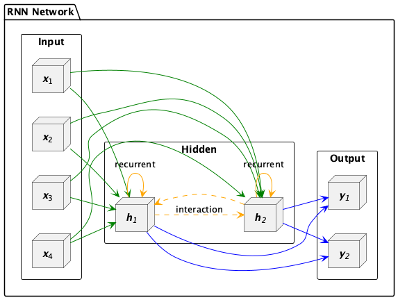
Figure 8: RNN架構
3.3. 應用情境
針對上述模型，我們可以設想一個智慧工廠中的機器維護預測系統，這個工廠中的一台重要機器每分鐘會傳回 4 個感測器數據：溫度、壓力、振動幅度和電流。這些數據會被送進 RNN 模型中，並根據目前時間點的數值預測機器的異常風險和維修建議指數。
機器感測器每分鐘會收到下列資料：
- 溫度（Temperature）
- 壓力（Pressure）
- 振動幅度（Vibration）
- 電流（Current）
這些資料會被送進 RNN 模型中，並根據目前時間點的數值預測：
- 預測下個時間點的異常風險（是否有可能故障）
- 預測是否需維修（建議立即維護/可繼續運行）
模型解讀：
- 輸入層（4 個感測器值）
- RNN 隱藏層會考慮時間序列的歷史變化（例如溫度持續升高等趨勢）
- 輸出層（2 個節點）代表兩個預測目標：
- y₁: 機器異常風險機率
- y₂: 維修建議指數（例如 0~1）
- y₁: 機器異常風險機率
實際應用流程：
- 感測器每分鐘傳來資料，累積成序列輸入模型。
- RNN 模型處理並輸出風險值與建議。
- 若風險高，系統自動發出警報並派出工程師檢條，防範因機器突然故障導致生產線停機進而導致生產進度落後與金錢損失。
4. RNN模型練習
4.1. 匯入與資料產生
1: import numpy as np 2: import matplotlib.pyplot as plt 3: 4: # 1. 生成 sin(x) + cos(x) 並加入雜訊的時間序列資料 5: def generate_sin_cos_data(total_length=3000, noise_std=0.1): 6: x = np.linspace(0, total_length * 0.1, total_length) 7: clean = np.sin(x) + np.cos(x * 0.5) # 不同頻率增加變化性 8: noise = np.random.normal(0, noise_std, size=clean.shape) 9: noisy_data = clean + noise 10: return x, noisy_data.reshape(-1, 1), clean.reshape(-1, 1) 11: 12: # 2. 繪圖展示 sin + cos 波型（含雜訊） 13: x, noisy_data, clean_data = generate_sin_cos_data() 14: 15: plt.figure(figsize=(12, 4)) 16: plt.plot(x, clean_data, label='Clean sin(x) + cos(0.5x)', alpha=0.6) 17: plt.plot(x, noisy_data, label='Noisy signal', alpha=0.8) 18: plt.title("Time Series: sin(x) + cos(0.5x) with Noise") 19: plt.xlabel("x") 20: plt.ylabel("Value") 21: plt.legend() 22: plt.grid(True) 23: plt.tight_layout() 24: plt.show()
4.2. 前處理與序列資料製作
1: import tensorflow as tf 2: from tensorflow import keras 3: from sklearn.preprocessing import MinMaxScaler 4: 5: # 標準化 6: scaler = MinMaxScaler() 7: scaled = scaler.fit_transform(noisy_data) 8: 9: # 建立序列 10: def create_sequences(data, seq_len=20): 11: X, y = [], [] 12: for i in range(len(data) - seq_len): 13: X.append(data[i:i+seq_len]) 14: y.append(data[i+seq_len]) 15: return np.array(X), np.array(y) 16: 17: SEQ_LEN = 20 18: X, y = create_sequences(scaled, SEQ_LEN) 19: 20: # 分訓練與測試集 21: split = int(len(X) * 0.8) 22: X_train, y_train = X[:split], y[:split] 23: X_test, y_test = X[split:], y[split:] 24:
4.3. 建立RNN模型
1: model = keras.models.Sequential([ 2: keras.layers.SimpleRNN(1, input_shape=[None, 1]) # 預設 activation='tanh' 3: ]) 4: model.compile(loss='mse', optimizer='adam') 5: model.summary()
在 Keras 中，input_shape=[None, 1] 的意思是：
| 維度 | 代表什麼 | 解釋 |
| None | 時間步長（timesteps） | 不指定具體長度，代表可以處理「任意長度」的序列 |
| 1 | 每個時間點的特徵數 | 這裡是一個數字（例如只有一個值：sin+cos），所以是 1 維特徵 |
在 Keras RNN 中，每筆資料會被視為一個 3 維陣列：
1: [樣本數, 時間步長 (None), 特徵數]
舉個例子：
1: X.shape = (1000, 20, 1)
| 維度 | 代表 | 舉例 |
| 1000 | 有 1000 筆序列 | 訓練樣本數 |
| 20 | 每筆序列長度是 20 步 | 每筆是一段長度 20 的時間序列 |
| 1 | 每步只有 1 個數字 | 像是 sin 值、溫度、股價 |
我們現在只知道每個時間點有 1 個特徵（像是溫度），但不知道資料序列會多長，因此時間的維度就交給模型在運作時決定，所以寫 None。」
4.4. 訓練模型
1: model.fit(X_train, y_train, epochs=20)
4.5. 評估預測效果並繪圖
幾種RNN模型的評估指標如下：
- MSE（均方誤差，Mean Squared Error）, 是預測值與實際值之間的平均平方差，越小越好, 單位是平方的數值。計算公式如下：
\[ MSE = \frac{1}{n} \sum_{i=1}^{n} (y_i - \hat{y}_i)^2 \]
其中，$y_i$是實際值，$\hat{y}_i$是預測值，$n$是樣本數。 - MAE（平均絕對誤差，Mean Absolute Error）, 是預測值與實際值之間的平均絕對差，越小越好, 單位與資料本身一致, 優點是不容易被極端值影響。計算公式如下：
\[ MAE = \frac{1}{n} \sum_{i=1}^{n} |y_i - \hat{y}_i| \]
其中，$y_i$是實際值，$\hat{y}_i$是預測值，$n$是樣本數。 - RMSE（均方根誤差，Root Mean Squared Error）, 是預測值與實際值之間的均方根誤差，越小越好, 單位是平方根的數值，常用在實際工程應用。 計算公式如下：
\[ RMSE = \sqrt{\frac{1}{n} \sum_{i=1}^{n} (y_i - \hat{y}_i)^2} \]
其中，$y_i$是實際值，$\hat{y}_i$是預測值，$n$是樣本數。 - \(R^2\)（決定係數，Coefficient of Determination），是用來評估模型預測能力的指標，值介於0~1之間，越接近1表示模型越好。$R^2$的計算公式如下：
\[ R^2 = 1 - \frac{\sum_{i=1}^{n} (y_i - \hat{y}_i)^2}{\sum_{i=1}^{n} (y_i - \bar{y})^2} \]
1: predicted = model.predict(X_test) 2: # 還原回原始數值 3: predicted_inv = scaler.inverse_transform(predicted) 4: actual_inv = scaler.inverse_transform(y_test) 5: 6: plt.figure(figsize=(12, 4)) 7: plt.plot(actual_inv, label='Clean Target', alpha=0.6) 8: plt.plot(predicted_inv, label='Predicted', alpha=0.8) 9: plt.title("Keras SimpleRNN Prediction") 10: plt.xlabel("Time step") 11: plt.ylabel("Value") 12: plt.legend() 13: plt.grid(True) 14: plt.show() 15:
4.6. 提升效能
- 增加隱藏層神經元數量
1: keras.layers.SimpleRNN(8, input_shape=[None, 1])
- 增加隱藏層數量
例如：SimpleRNN層、Dense層、Dropout層
- SimpleRNN層
1: model = keras.models.Sequential([ 2: keras.layers.SimpleRNN(4, return_sequences=True, input_shape=[None, 1]), # 第一層要回傳序列 3: keras.layers.SimpleRNN(4), # 第二層直接接收整段序列資訊 4: keras.layers.Dense(1) 5: ])
return_sequences=True：告訴第一層 RNN 回傳「每個時間步的輸出」，否則下一層 RNN 沒辦法處理。
- Dense層
1: model = keras.models.Sequential([ 2: keras.layers.SimpleRNN(4, input_shape=[None, 1]), # 增加容量 3: keras.layers.Dense(1) # 加輸出層 4: ])
- Dropout層
1: model = keras.models.Sequential([ 2: keras.layers.SimpleRNN(4, return_sequences=True, input_shape=[None, 1]), 3: keras.layers.SimpleRNN(4), 4: keras.layers.Dropout(0.2), 5: keras.layers.Dense(1) 6: ])
- SimpleRNN層
- 增加訓練次數
5. LSTM
RNN的一個主要問題是，當序列變得很長時，它們很難記住遠處的資訊。這是因為在 RNN 中，每個時間點的輸出都是由當前輸入和上一個時間點的輸出共同決定的。這意味著當序列變得很長時，RNN 會遺忘遠處的資訊，導致模型無法很好地理解整個序列。
為了加強這種RNN的「記憶能力」，人們開發各種各樣的變形體，如非常著名的Long Short-term Memory(LSTM)，用於解決「長期及遠距離的依賴關係」。
5.1. LSTM的運作原理
想象你有一個書包（LSTM的內部結構），你可以決定在上課前放入什麼書籍、何時取出某本書，或者甚至決定更新裡面的某些書，你每天上學就利用書包裡的書來學習新的知識。LSTM也有類似的機制來處理信息，這些機制就是一個個的閘門(Gate)。
LSTM利用一個新的機制：記憶狀態（Cell State ）來達到保留長期記憶，如圖9所示，我們可以想像LSTM將RNN的隱藏狀態拆成兩部份：記憶狀態的變化較慢，能儘量保留先前的記憶、而隱藏狀態則隨輸入不同而有較多變化。
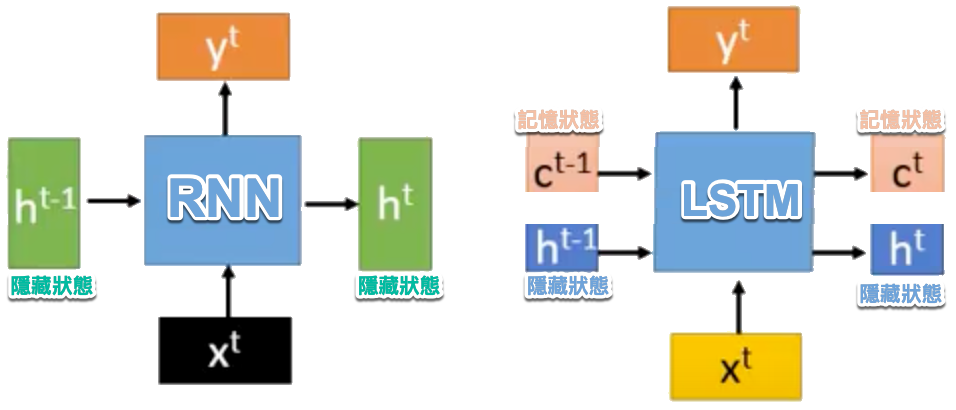
Figure 9: RNN v.s. LSTM
除了記憶狀態，LSTM還多了三個閘門來管控資訊的保留與遺忘：遺忘閘（forget gate）、輸入閘（input gate）、輸出閘（output gate）。其相應功能大致如下(參考圖10)：
- 遺忘閘（forget gate）：控制模型中有哪些資訊可以被遺忘。
- 輸入閘（input gate）：控制當前的輸入資訊能對記憶狀態產生多大的影響。
- 輸出閘（output gate）：控制記憶狀態中的哪些資訊可以被傳遞到隱藏狀態並往後傳遞。
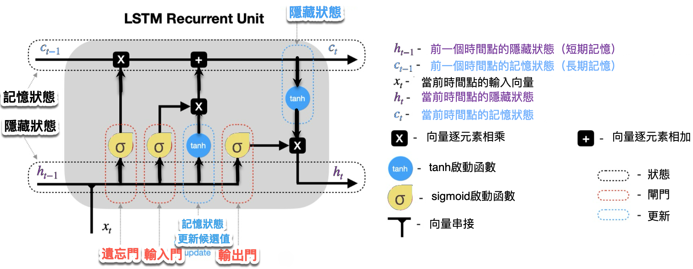
Figure 10: LSTM
典型的LSTM架構如圖10所示，可以看出除了原本的資料輸入(input)，LSTM還多了三個輸入，分別是input(模型輸入），forget gate(遺忘閘)，input gate(輸入閘)，以及output gate(輸出閘)。因此相比普通的神經網路，LSTM的參數量是它們的4倍。這3個閘訊號都是處於0～1之間的實數，1代表完全打開，0代表關閉。
- 遺忘閘（Forget Gate）：這就像是你決定從書包中拿掉不再需要的書。在LSTM中，遺忘閘會查看新的輸入信息和當前的記憶，然後決定保留哪些記憶（有用的）或者遺忘哪些（不再重要的）。
- 輸入閘（Input Gate）：這是決定將哪些新書放入書包。LSTM會評估當前的輸入（例如新的單詞或資料點），並決定應該添加哪些信息到記憶中，這有助於更新記憶內容。
- 輸出閘（Output Gate）：決定從書包中拿出哪本書來使用。根據需要的話題或任務，LSTM會決定哪些記憶是目前有用的，然後基於這些記憶提供輸出信息。
- 記憶單元（Memory Cell）：這是LSTM的核心，它負責記錄和更新所有的記憶。記憶單元是一個長期的記憶存儲，可以通過遺忘閘和輸入閘來更新。LSTM 中的 Memory Cell（也就是記憶狀態，通常記為 Cₜ）的核心功能，就是要 跨時間步保持資訊的狀態，這也是它的關鍵設計。
圖10為時間點t時資料在神經元中流動示意，進一步的處理流程如下所述：
- LSTM神經元於時間點t收到三項輸入資料：
- x_t：代表當前時間點的輸入資料。
- h_(t-1)：上一時間點的隱藏狀態。
- c_(t-1)：上一時間點的記憶狀態。
- x_t：代表當前時間點的輸入資料。
- LSTM神經元於時間點t輸出兩項資料：
- c_t：代表當前的記憶狀態，c_t的值來自以下兩部份：
- 輸出閘：決定有多少來自c_t的資訊可以傳遞到h_t。
- c_t：代表當前的記憶狀態，c_t的值來自以下兩部份：
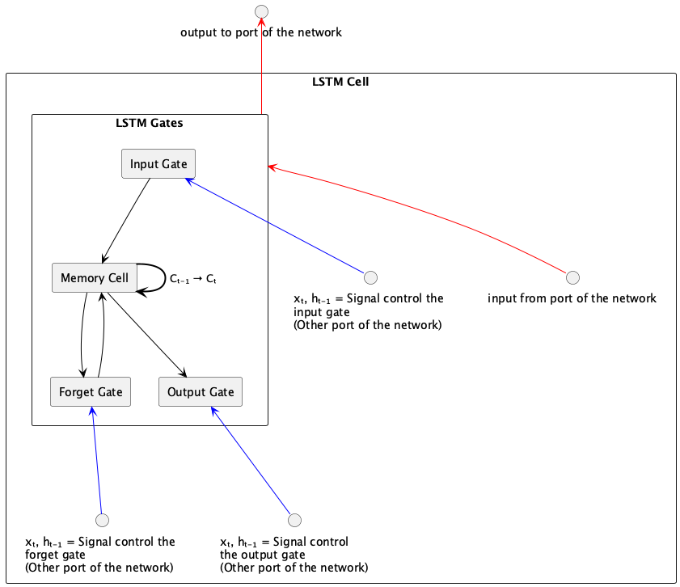
Figure 11: LSTM架構
進一步從時間序列的角度來看，LSTM運作過程中的資料流向如下：
- 遺忘閘(Forget Gate)：該閘決定在特定時間點(timestamp, 例如圖12中的\(t\) )，前一個時間點(\(t-1\)) 的模型記憶(也就是狀態, state)是否會被記住保留參與這個時間點的運算，或是直接被遺忘。當遺忘閘打開時，前一刻的記憶會被保留，當遺忘閘關閉時，前一刻的記憶就會被清空。換句話說，就讓模型具備選擇性遺忘部份訊息的能力，這個機制可以由激活函數sigmoid來實作，其中0代表完全忘記，1代表完全記住。
- 輸入閘(Input Gate): 決定目前這個時間點有哪些神經元的輸入(\(x\))中有哪些是足夠重要到可以保留下來加入「目前狀態」中，因為在序列輸入中，並不是每個時刻的輸入的資訊都是同等重要的，當輸入完全沒有用時，輸入閘關閉，也就是此時刻的輸入資訊被丟棄了。這個機制同樣也可以由sigmoid 激活函數來實作，sigmoid產生的值介於0到1之間，可以被看作是一個閘控信號，這個閘控信號和tanh函數生成的候選隱藏狀態相乘，確定了從候選狀態中將多少資訊添加到當前的單元狀態中。
- 輸出閘(Output Gate): 決定目前神經元的狀態中有哪一部分可以輸出(流向下一個狀態)，同樣由激活函數來sigmoid來決定，這個輸出會通過tanh函數來調整，因為Tanh能夠將單元狀態的值正規化到-1到1之間，這有助於控制神經網路的激活範圍。再由Tanh來提供輸出權重。
- 記憶單元(Memory Cell): 這是LSTM的核心，它負責記錄和更新所有的記憶。記憶單元是一個長期的記憶存儲，可以通過遺忘閘和輸入閘來更新。LSTM 中的 Memory Cell（也就是記憶狀態，通常記為 Cₜ）的核心功能，就是要 跨時間步保持資訊的狀態，這也是它的關鍵設計。在數學公式中，LSTM 的記憶更新如下：\(C_t=f_t \times C_{t−1}+i_t \times \tilde{C}_t\)，其中：
- \(f_t\) ：忘記閘輸出（控制保留多少舊記憶）
- \(C_{t-1}\) ：上一個時間步的記憶狀態
- \(i_t\) ：輸入閘輸出（控制加入多少新資訊）
- \(\tilde{C}_t\) ：由當前輸入與前一隱藏狀態計算出的新候選記憶
- \(f_t\) ：忘記閘輸出（控制保留多少舊記憶）
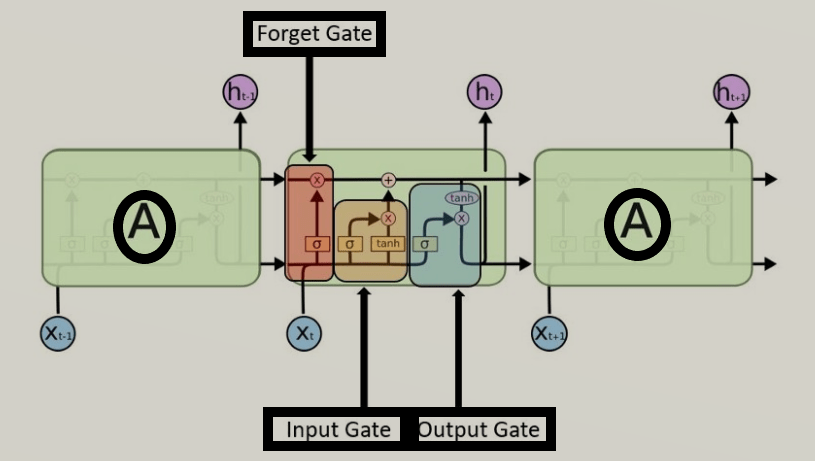
Figure 12: LSTM運作原理
因為這樣的機制，讓 LSTM 即使面對很長的序列資料也能有效處理，不遺忘以前的記憶。因為效果卓越，LSTM 非常廣泛地被使用。事實上，當有人跟你說他用 RNN 做了什麼 NLP 專案時，有 9 成機率他是使用 LSTM 或是 GRU（LSTM 的改良版，只使用 2 個閘閘） 來實作，而不是使用最簡單的 SimpleRNN。
5.2. LSTM的程式運作示例
LSTM 的設計引入了三個「閘」（gate）：
- **遺忘閘 forget gate**：決定應該忘記多少過去的記憶
- **輸入閘 input gate**：決定應該加入多少新的資訊進入記憶
- **輸出閘 output gate**：決定應該輸出多少目前的記憶內容
此外，LSTM 維持了兩種狀態：
- **cell state（長期記憶）C_t**：透過閘控機制被有選擇地保留或更新
- **hidden state（短期輸出）h_t**：實際傳給下一層網路的輸出
其計算過程可以用以下簡化版 Python 表示：
1: def lstm_step(x_t, h_t_prev, c_t_prev): 2: forget_gate = sigmoid(W_f @ x_t + U_f @ h_t_prev + b_f) 3: input_gate = sigmoid(W_i @ x_t + U_i @ h_t_prev + b_i) 4: output_gate = sigmoid(W_o @ x_t + U_o @ h_t_prev + b_o) 5: candidate = tanh(W_c @ x_t + U_c @ h_t_prev + b_c) 6: 7: c_t = forget_gate * c_t_prev + input_gate * candidate 8: h_t = output_gate * tanh(c_t) 9: return h_t, c_t 10: 11: h_t, c_t = 0, 0 # 初始化 12: for x_t in input_sequence: 13: h_t, c_t = lstm_step(x_t, h_t, c_t)
LSTM 解決了 RNN 無法長期保留資訊的問題，特別適用於像語言模型、機器翻譯、長時間序列預測等任務。
5.3. LSTM的程式模型架構
LSTM 是一種改良版的 RNN，可記住更長期的資訊。只需將 SimpleRNN 改為 LSTM 層即可。以下是一個 LSTM 模型的寫法：
1: import tensorflow as tf 2: from tensorflow.keras import layers, models 3: 4: # 模型輸入層 (4個節點) 5: inputs = layers.Input(shape=(1, 4)) 6: 7: # 隱藏層 (LSTM層, 2個單元) 8: hidden = layers.LSTM(units=2, activation='tanh', return_sequences=False)(inputs) 9: 10: # 模型輸出層 (2個節點) 11: outputs = layers.Dense(units=2, activation='linear')(hidden) 12: 13: # 建立並編譯模型 14: model = models.Model(inputs=inputs, outputs=outputs) 15: model.compile(optimizer='adam', loss='mse') 16: 17: # 顯示模型結構 18: model.summary()
Model: "functional" ┏━━━━━━━━━━━━━━━━━━━━━━━━━━━━━━━━━┳━━━━━━━━━━━━━━━━━━━━━━━━┳━━━━━━━━━━━━━━━┓ ┃ Layer (type) ┃ Output Shape ┃ Param # ┃ ┡━━━━━━━━━━━━━━━━━━━━━━━━━━━━━━━━━╇━━━━━━━━━━━━━━━━━━━━━━━━╇━━━━━━━━━━━━━━━┩ │ input_layer (InputLayer) │ (None, 1, 4) │ 0 │ ├─────────────────────────────────┼────────────────────────┼───────────────┤ │ lstm (LSTM) │ (None, 2) │ 56 │ ├─────────────────────────────────┼────────────────────────┼───────────────┤ │ dense (Dense) │ (None, 2) │ 6 │ └─────────────────────────────────┴────────────────────────┴───────────────┘ Total params: 62 (248.00 B) Trainable params: 62 (248.00 B) Non-trainable params: 0 (0.00 B)
5.4. 實作: 以AI預測股價-隔日漲跌
- 安裝相關套件
1: pip install yfinance - 下載股價資訊
1: import yfinance as yf 2: 3: df = yf.Ticker('2330.TW').history(period='10y') 4: print(type(df))
- 觀察原始資料/日K圖
1: import matplotlib.pyplot as plt 2: plt.clf() 3: plt.plot(data.Close) 4: plt.show()
- 將資料標準化
1: from sklearn.preprocessing import MinMaxScaler 2: scaler = MinMaxScaler(feature_range=(0, 1)) 3: sc_data = scaler.fit_transform(data.values) 4: 5: sc_data #變成numpy array
- 建立、分割資料
- 建立資料集及標籤
1: import numpy as np 2: 3: featureDays = 10 4: x_data, y_data = [], [] 5: for i in range(len(sc_data) - featureDays): 6: x = sc_data[i:i+featureDays] 7: y = sc_data[i+featureDays] 8: x_data.append(x) 9: y_data.append(y) 10: 11: x_data, y_data = np.array(x_data), np.array(y_data) 12: 13: print(x_data.shape) 14: print(y_data.shape) 15: print(len(x_data)) #全部資料筆數
- 分割訓練集與測試集
1: ratio = 0.8 2: train_size = round(len(x_data) * ratio) 3: print(train_size) 4: x_train, y_train = x_data[:train_size], y_data[:train_size] 5: x_test, y_test = x_data[train_size:], y_data[train_size:] 6: 7: print(x_train.shape) 8: print(y_train.shape) 9: print(x_test.shape) 10: print(y_test.shape)
- 建立資料集及標籤
- 建立、編譯、訓練模型
- 建立模型
1: import tensorflow as tf 2: #建構LSTM模型 3: model = tf.keras.Sequential() 4: # LSTM層 5: model.add(tf.keras.layers.LSTM(units=64, unroll = False, input_shape=(featureDays,1))) 6: # Dense層 7: model.add(tf.keras.layers.Dense(units=1))
1: model.summary() - 編譯模型
1: model.compile(loss='mse', optimizer='adam', metrics=['accuracy'])
- 訓練模型
1: model.fit(x_train, y_train, 2: validation_split=0.2, 3: batch_size=200, epochs=20)
- 建立模型
- 性能測試
- loss
1: score = model.evaluate(x_test, y_test) 2: print('loss:', score[0])
- predict
1: predict = model.predict(x_test) 2: predict = scaler.inverse_transform(predict) 3: predict = np.reshape(predict, (predict.size,)) 4: ans = scaler.inverse_transform(y_test) 5: ans = np.reshape(ans, (ans.size,)) 6: print(predict[:3]) 7: print(ans[:3])
- plot
1: plt.plot(predict) 2: plt.plot(ans) 3: plt.show()
- loss